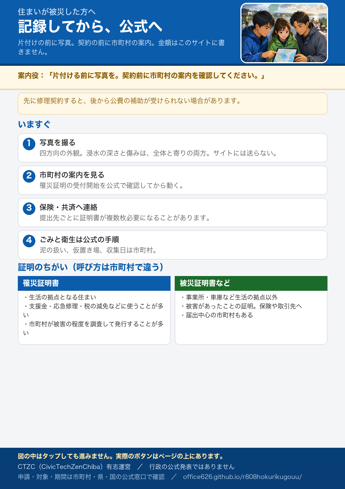

住まいが被災した方へ
有志運営です。申請窓口ではありません。対象・期間・金額・受付開始は、お住まいの市町村と県・国の公式で確認してください。適用可否は各実施機関の判断です。
いますぐやること
片付けや修理の前に、記録を残すことが先です。写真はサイトに送らないでください。
- 被害が分かる写真を撮る。 建物はできるだけ四方向から。浸水した深さや傷んだ場所は、全体が分かる写真と、近くで分かる写真の両方。
- 契約する前に、市町村の罹災証明の案内を見る。 先に業者と契約して自己負担すると、後から公費の補助が受けられない場合があります。
- 保険会社や共済に連絡する。 証明書は火災・水害・自動車など、提出先ごとに複数枚が必要になることがあります。
- 感染症と災害ごみは公式の手順で。 下水が混じった泥の扱い、仮置き場・収集日は市町村公式。
- 領収書・レシートを全部取っておく。 片付けの道具、清掃・修理の業者、宿泊、引越し、買い直した家財。保険の請求、応急修理の精算、翌年の税の申告（雑損控除）で使います。捨てると戻りません。
- 住まいが被害を受けたとき 最初にすること（政府広報オンライン） 行政
- 被災者支援・被害状況調査の案内（内閣府） 行政
- 被災した家屋での感染症対策（厚生労働省） 行政
- 災害廃棄物対策情報サイト（環境省。出し方は市町村公式へ） 行政
罹災証明と被災証明の違い
呼び方は市町村で少し違うことがあります。申請先はお住まいの市町村です。どちらが必要かは公式の案内で確認してください。
| 罹災証明書 | 被災証明書（被災届出など） | |
|---|---|---|
| おもな対象 | 生活の拠点となる住まい（自宅など） | 事業所、車庫、駐車場など、生活の拠点以外の建物や物 |
| 何に使うか | 支援金、応急修理、応急仮設、税の減免、保険など（制度ごとに要確認） | 被害があったことの証明。保険や取引先への提出など |
| 調査 | 市町村が被害の程度を調査して発行することが多い | 届出中心の市町村もある。公式の種別を確認 |
住まいが被災しているのに車庫だけ申請しても、住まいの支援には使えないことがあります。逆に、店舗や車庫の被害は罹災証明の対象にならないことがあります。
注意してほしいこと
- 先に直してしまうと、支援の対象外になり得ます。 生活を急いで立て直したい気持ちは当然です。公費の補助を受けたい場合は、記録を残し、市町村の受付開始を公式で確認してから動く方が安全です。対象は各制度の公式の判断です。
- もらえる金額は、被害の区分で変わります。 全壊・半壊などの判定は調査の結果です。サイトに金額は書きません。最新は内閣府・県・市町村の公式へ。
- 便乗商法と「保険金で無料修理」に注意。 急かして契約させる、点検と称して高額請求する、といった事例への注意喚起が出ています。
- 受付はまだ準備中の市町村があります。 調査に入っている段階では、窓口の開始日がこれから発表されることがあります。
- 災害に便乗した悪質商法に注意（消費者庁） 行政
- 保険金を使った無料修理などをうたう契約への注意（消費者庁） 行政
片付けのときの健康と電気
- 熱中症。 8月の泥出しは重労働です。早朝・夕方に作業し、水分と塩分、こまめな休憩。一人で作業しない。
- けがと破傷風。 泥の中のくぎ・ガラス。長靴・厚手の手袋・マスク。深い傷や汚れた傷は受診を。
- 床下は、泥を出して乾かしてから消毒。 乾かさないとカビ・悪臭・木材の傷みがあとから出ます。消石灰などの扱いは公式の手順で。
- 浸水した家電・コンセント・分電盤は通電の前に点検。 中に水や泥が残っていると、あとから漏電・発火することがあります。停電から復旧するときは、ブレーカーを上げる前にプラグを抜き、燃えやすい物が近くにないか見る。発電機は屋内で使わない。
- 熱中症予防情報サイト（環境省） 行政
- 熱中症予防（厚生労働省） 行政
- 被災した家屋での感染症対策（消毒・けが）（厚生労働省） 行政
- 浸水した家電製品から発火（NITE 製品評価技術基盤機構） 行政
- 北陸電気保安協会（電気設備の点検相談） 公式
車が水没した
- エンジンをかけない。 電気系統のショート・発火のおそれがあります。動かすときは販売店・整備工場・ロードサービスへ。
- 写真を撮り、保険会社に連絡。 自動車保険の車両保険に水災が含まれていることがあります。契約内容は保険会社へ。
- 廃車にする場合は抹消の手続き。 車の被害は、市町村によっては罹災証明ではなく被災証明の対象です。
県内の防災NPO・支援団体の発信
行政以外で、住まいの片付けや生活再建の案内を出している団体です。現地ボランティアの受付はこのサイトでは行いません。参加の可否は社協の災害ボランティアセンターへ。
- 全社協 被災地支援・災害ボランティア情報 社協 災害ボランティアセンターの開設状況。
- 災害ボランティア活動支援プロジェクト会議（支援P） 中間支援
- 震災がつなぐ全国ネットワーク「水害にあったときに」 NPO 浸水後の写真・乾燥・カビ・再建の手引き（2025年改訂）。
- JVOAD：水害の手引きをノウハウ集に追加 NPO
- 石川県社会福祉協議会 社協
- 富山県社会福祉協議会 社協
- 福井県社会福祉協議会 社協
- CivicTechZenChiba（CTZC） シビックテック 本サイトの運営団体。
説明会・相談会・セミナー
石川・富山・福井の開催案内は、まだこのサイトに集められていません。参加条件・中止は主催の公式で確認してください。金額は書きません。
これから増えることがあります。探し方の例です。
- このサイトの市町村ページ（公式お知らせ）
- 全社協の災害ボランティア情報（センター開設に伴う説明が出ることがあります）
これから起きること（生活再建の段取り）
型は共通です。いまどこまで進んでいるかは市町村ごとに違います。
- 被害の記録（写真）と、保険・市町村公式の確認
- 市町村による被害状況の調査（税務など住まいの評価に関わる部署が担うことが多い、と一般に説明されています）
- 罹災証明書などの発行
- 応急修理か、応急仮設（民間アパートの家賃補助など）かの分岐。両方の条件・期間は公式へ
- 生活再建支援金などの申請（区分と要件は公式）
災害救助法が適用された市町では、応急修理・応急仮設のほか、避難所の運営や学用品など、細かい支援が動き得ます。メニューの有無と開始日は県・市町の公式で確認してください。
移動・ライフライン・お店の情報へ ／ 店舗・工場など、被災した事業者の方へ
